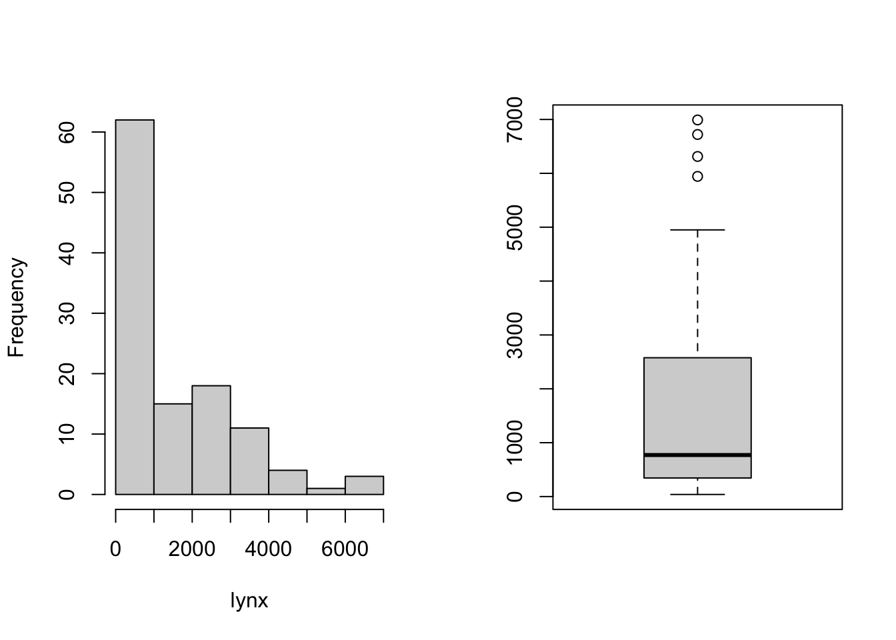
Lecture 3b - Exploring Time Series
- A time series is a sequence of repeated observations of a particular variable over time.
- The US opinion poll data is an example of a time series.
- Unlike a regular variable, observations of a time series are not independent.
- Time series analysis is a whole subject within statistics, but we won’t be going into that.
- Visualising time series is relatively simple - if we observe \(y_i\) at time \(t_i\), then we simply plot the pairs \((y_i,t_i)\) on a scatterplot and often then join the points by lines.
- It is common to add a trend estimate using some form of smoothing.
- Multiple time series of the same variable can be stacked or standardised.
Features to look for:
- An overall trend or pattern of behaviour over time (or lack thereof)
- Presence of regular patterns of behaviour around the trend
- Any changes in or deviations from the trend
- Similarities and differences between:
- Different but related series for the same population
- The same series for different sub-groups
The key thing to remember is that the observations of a time series are not independent! So, looking at one-variable summaries can be misleading – the most important feature is how things behave over time. For instance, consider this data on the population of lynxes over time. If we ignore the time aspect, then the data look like this
But by explicitly including time in the visualisation, we radically change what we can learn.

We can see there are cyclical changes in the populations, with regular peaks and troughs in the population numbers. All of this is lost if we forget about the dependence on time.
To plot data using connected lines, we can use the same plot function as for scatterplots, but add the ty argument with value l for line. Alternatively, if the time series is relatively short, we can use b instead to show both lines and points. Another option is s for steps.
Note also that when drawing time series we prefer to join our points by lines. As these quantities evolve over time, it is natural to connect the points to indicate the transition from time point to time point. Usually, we default to connecting points with straight lines, but smoothers or other curves can also be used.
Quick recall of LOESS smoothing
This is a time series of polling data. We want to analyse trends in it:
library(dslabs)
data(polls_2008)
polls_2008 <- as.data.frame(polls_2008)
plot(x=polls_2008$day, y=polls_2008$margin,pch=16,xlab='Day',ylab='Margin')
The smoothing technique used for time series is called LOESS. Here is how a LOESS curve on the polling data looks like:
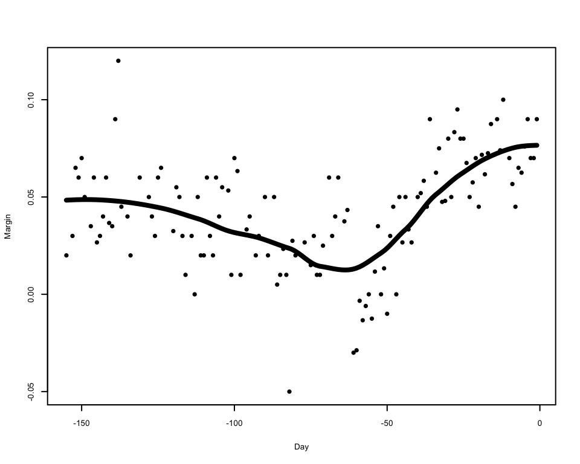
but it is just one of many possible smoothings! In general, a LOESS depends on a parameter, known as the span.
Example: US Savings rate
Time series of financial variables are very often noisy and highly variable. The plot below shows the US Personal Savings Rate over time.
load('economics.Rda')
plot(x=economics$date, y=economics$psavert, ty='l', xlab='Date', ylab='Personal Savings Rate')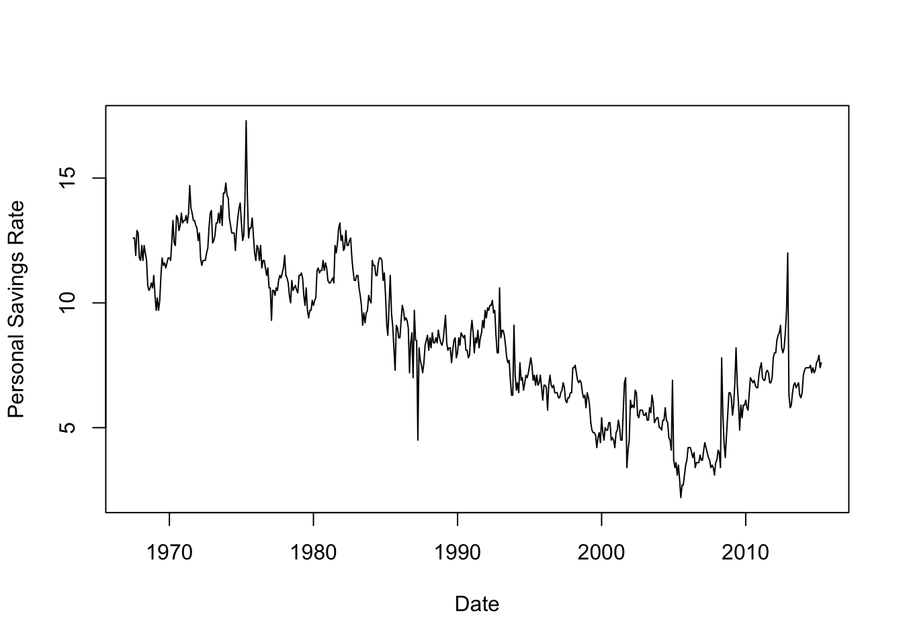
There are signs of a global trend to these data, which slowly evolves over time. However, separating the ‘trend’ from ‘noise’ is difficult. Additionally, there is no clear regular patterns to observe like with the lynx data. One approach to unpacking the behaviour of time series data is to apply smoothing techniques with different bandwidths.
A long bandwidth smoother could identify a trend such as the red line below. A smoother with a narrower bandwidth could detect some of the smaller variations around that trend, such as the green line. However there is plenty of residual variation that is still unexplained!
## create some times to predict the curve at
xs <- seq(min(as.numeric(economics$date)), max(as.numeric(economics$date)), length=200)
## fit the model, note we have to convert our 'date' to numbers here
lfit1 <- loess(psavert~as.numeric(date), data=economics)
## predict
lpred1 <- predict(lfit1, data.frame(date=xs), se = TRUE)
## same again, with smaller span
lfit2 <- loess(psavert~as.numeric(date), data=economics, span=0.1)
lpred2 <- predict(lfit2, data.frame(date=xs), se = TRUE)
## draw the plot
plot(x=economics$date, y=economics$psavert, xlab='Date',ylab='Personal Savings Rate', ty='l')
lines(x=xs, y=lpred1$fit, col='red',lwd=4)
lines(x=xs, y=lpred2$fit, col='green',lwd=4) 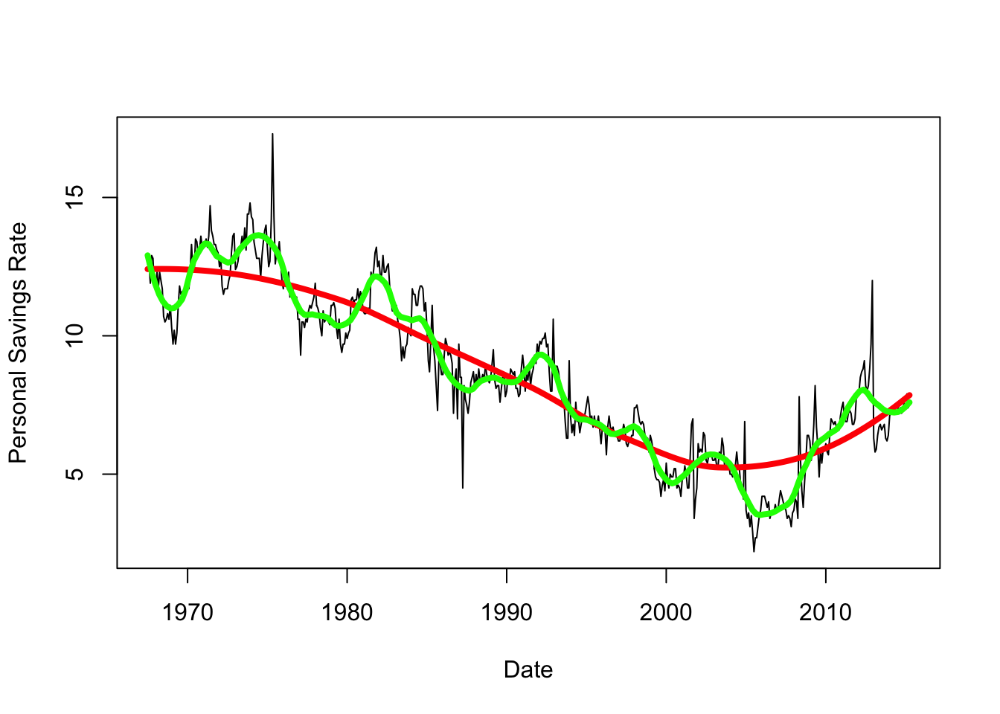
Time series components
It is often useful to think of a time series as being made up of multiple components:
- A trend - which describes the ‘big picture’ behaviour of the data over time
- Seasonal effects - which describes predictable behaviour around the trend. This is often periodic, though not all time series exhibit seasonal effects.
- Residuals - which are the random noise left over.
The time series is then thought of has a sum of these terms: \[Y_t=T_t+S_t+\epsilon_t.\]
Sometimes, time series also incorporate an ‘irregular’ component to represent non-seasonal departures from the trend.
Our example above could have a trend described by the red line. The green line doesn’t have a regular periodic behaviour - i.e. a regular pattern that repeats - so this would probably be the irregular component. The remaining noise of the data as indicated by the deviations of the black lines from the green would then constitute the residuals.
Example: German Unemployment Figures
The figure below shows the unadjusted quartery (West) German unemployment rates from 1961 to just after the unification of the two Germanies.
library(AER)Loading required package: carLoading required package: carDataLoading required package: lmtestLoading required package: zoo
Attaching package: 'zoo'The following objects are masked from 'package:base':
as.Date, as.Date.numericLoading required package: sandwichLoading required package: survivaldata(GermanUnemployment)
ts <- seq(1962,1991.75,by=0.25)
geu <- data.frame(GermanUnemployment)$unadjusted
plot(geu ~ts,ty='l',xlab='Time',ylab='Unadjusted Unemployment')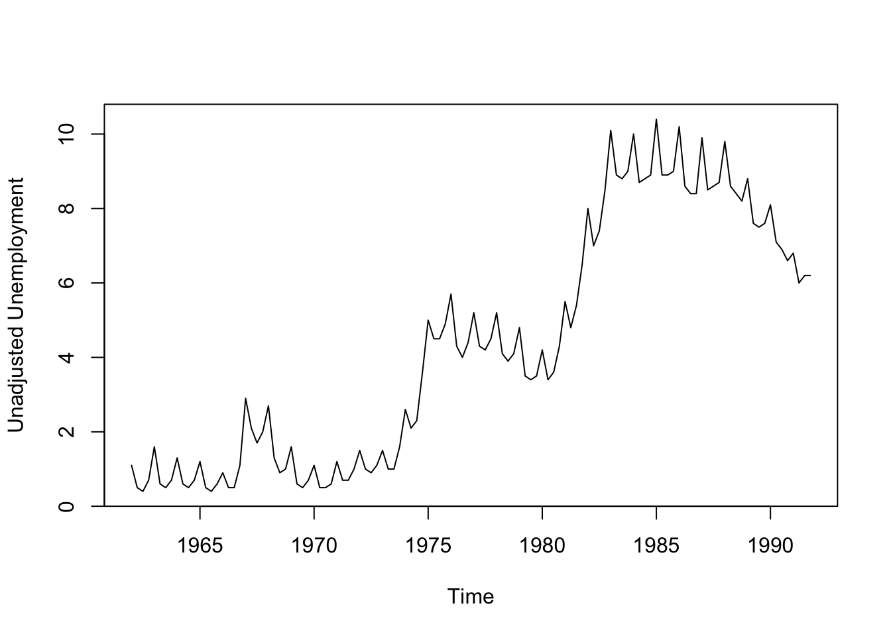
Unemployment was very low in the 60s and 70s, apart from a short spell in 1967. There were distinct jumps in unemployment in the mid 70s and early 80s due to the oil crises of 1973 and 1979. Unemployment was declining at the end of the series from the high levels in the 1980s. The series shows strong but regular variation around the trend corresponding to higher levels in winter than in summer.
The smoothing methods we’ve seen are particularly effective in extracting a smooth trend from the data:
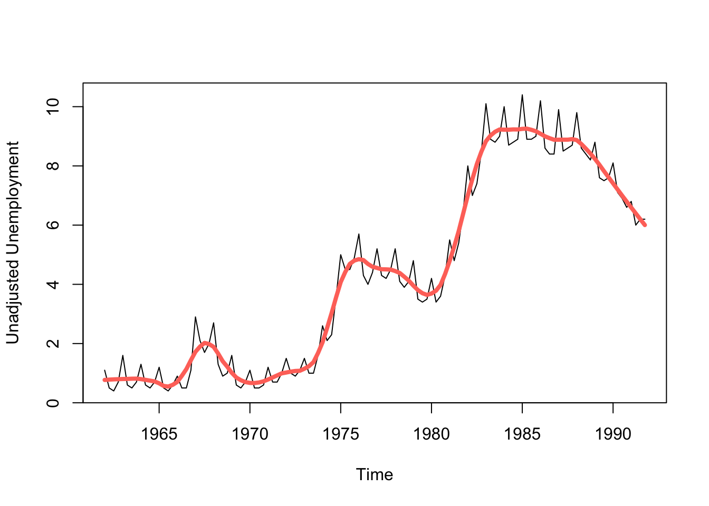
We can then take our trend and subtract it from the time series. What’s left over will be the seasonal component plus the residuals!
res <- geu - lpred$fit
plot(x=ts, y=res,col=3,lwd=2,ty='l',xlab='Time',ylab='Residual')
abline(h=0)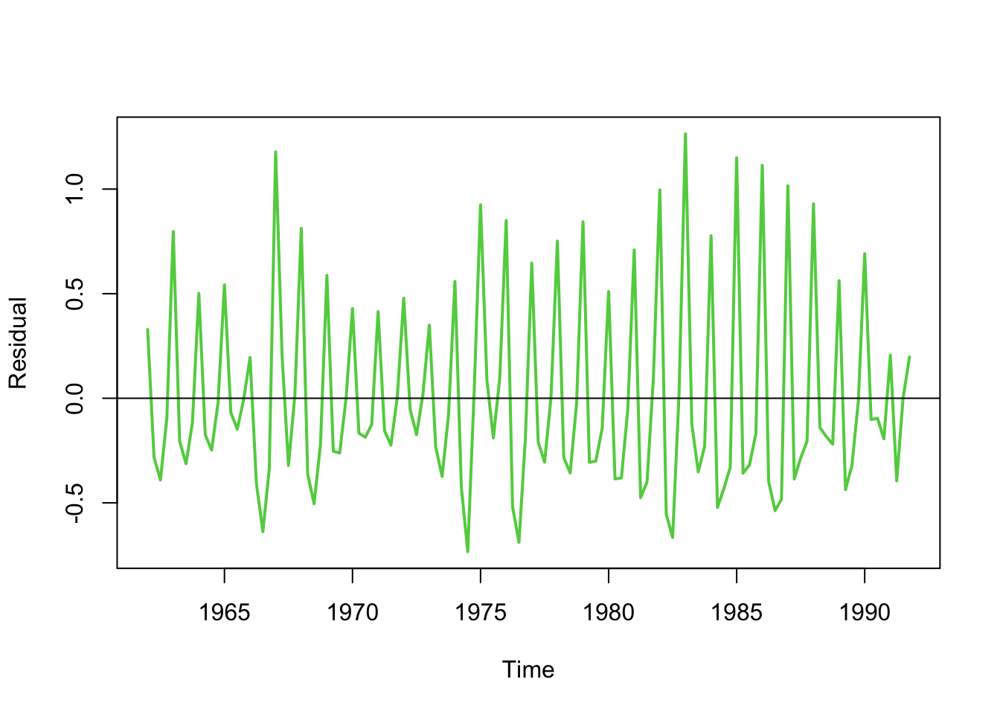
The seasonal pattern here is regular, with peaks and troughs occuring at regular intervals.
We can extract the time series components by hand by doing loess smooths of the data with different bandwidths. However, R can do most of this for us:
geu <- ts(GermanUnemployment[,1], ## Need to turn the data to a time series object
frequency=4) # Four observations per year defines the frequency of the regular pattern
decomp <- stl(geu, s.window = "periodic") ## pass `periodic` to seek a periodic seasonal component
plot(decomp)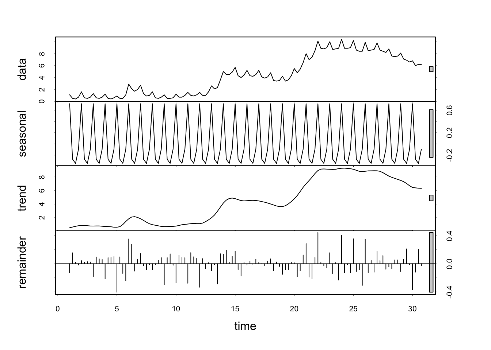
The results of the decomposition are shown in the various panels of the plot. The top panel gives the original data, the second panel shows the periodic seasonal component, the third panel shows the general trend, and the bottom panel shows the residuals leftover at the end.
Graphics for multiple time series
Depending on what time serieswe’re showing, there are a number of things to consider:
- Related series for the same population - if possible, show the different time series within the same plot to ease comparison. Be careful of units!
- Series for different subgroups - showing subgroups together helps draw comparisons. Are we interested in the values or the proportions of the subgroups?
- Series with different scales - may need standardising to a common scale to show together, otherwise separate plots will be needed.
Example: Florence Nightingale and Crimean War deaths
Florence Nightingale famously used data and visualisations to highlight the poor conditions of soldiers in field hospitals during the Crimean War (1854-6). While certainly more well-known as a nurse, she was also a statistician and the first female member of the Royal Statistical Society. She used data visualisations to highlight the causes of mortality of soliders in field hospitals during the Crimean War (1854-6).

While this is not a plot we would recognise today, it is a time series represented in polar form like a pie chart. The colours represent the different sources of mortality, and the segments represent sequential observations. Unwrapping this as a more conventional plot gives the more readable form:
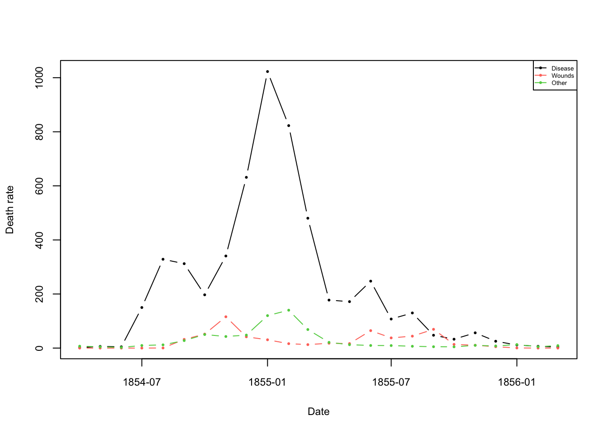
Plotting the annualised monthly death rates from disease, wounds, and other causes makes her case clearly. The death rate from diseases (black) due to poor conditions far outstrips the deaths due to injury sustained in combat (red). The most dangerous conflicts occured at the end of 1854, but even then the number of lives lost was dwarfed by deaths from disease.
Comparing Time Series
The simplest way to compare time series is to show them simultaneously on the same plot.
As an example, William Playfair graphed England’s trade to the East Indies in the 18th century. Let’s revisit this plot:

A more modern version would look something like this:
library(GDAdata)
data(EastIndiesTrade)
plot(x=EastIndiesTrade$Year,y=EastIndiesTrade$Imports, col=2, xlab='Year',
ylab='Exports (blue) and Imports (red)', lwd=4,ty='l',ylim=c(0,2000))
lines(x=EastIndiesTrade$Year,y=EastIndiesTrade$Exports,col=4,lwd=4)
library(scales)
polygon(x=c(EastIndiesTrade$Year,rev(EastIndiesTrade$Year)),
y=c(EastIndiesTrade$Imports,rev(EastIndiesTrade$Exports)),
col=scales::alpha('green',0.25),border=NA)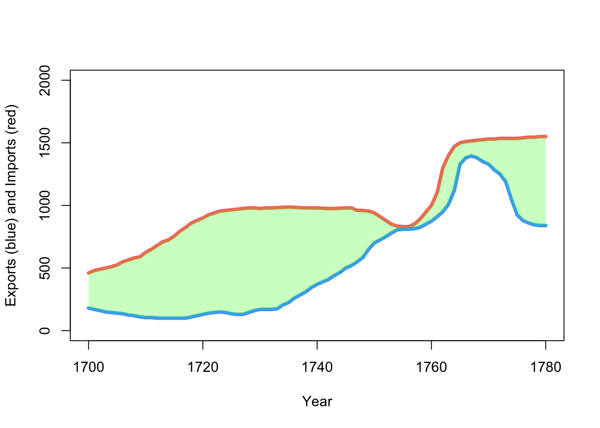
As the time series were recorded for the same time points, we can directly calculate differences, and show the trade deficit. The line \(y=0\) is significant as it indicates whether we’re in deficit or surplus, so we can add that for reference.
plot(x=EastIndiesTrade$Year,y=(EastIndiesTrade$Exports-EastIndiesTrade$Imports), col='green2', xlab='Year',
ylab='Exports - Imports', lwd=4,ty='l')
abline(h=0,col=2)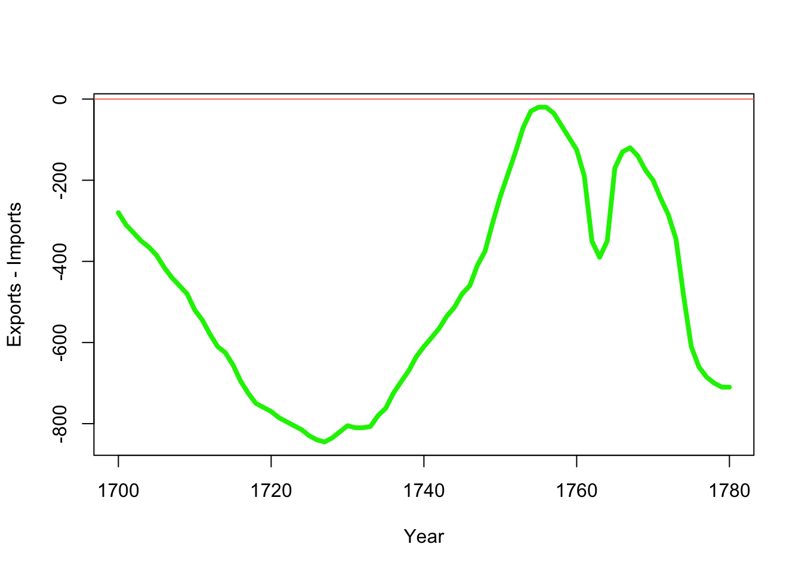
Many of the features can be associated with major events of the time: the War of Spanish Succession, 1701-14; the South Sea Bubble, 1720; the Seven Year’s War, 1756-63; and the American Revolutionary War, 1775-83. However, it would be rather harder to identify these from the original.
Example: UK Coronavirus Cases
The number of cases of coronavirus were recorded from March 2020 for the four UK nations during the Covid pandemic. Let’s consider a portion of that data running to late January 2021 covering the first “peaks” of the pandemic. This gives us four time series of the same variable, over the same time period. A sensible first plot would be to draw all time series in the same graph.

However, a major issue with comparing the case numbers between the four nations all together is it is difficult to distinguish the key features due to the vastly different scales. The variation in cases in England are quite clear, as are the three peaks of the pandemic, but since the numbers in the other nations are far smaller it is difficult to detect any pattern.
The official presentation of these data on the Government website is as a stacked total, where each nations total is successively added to the previous one. While this can be useful for showing the composition between groups of similar sizes, its really not very useful as the case numbers are still dominated by the England data and it’s larger population. This means a lot of detail is obscured and difficult to see.
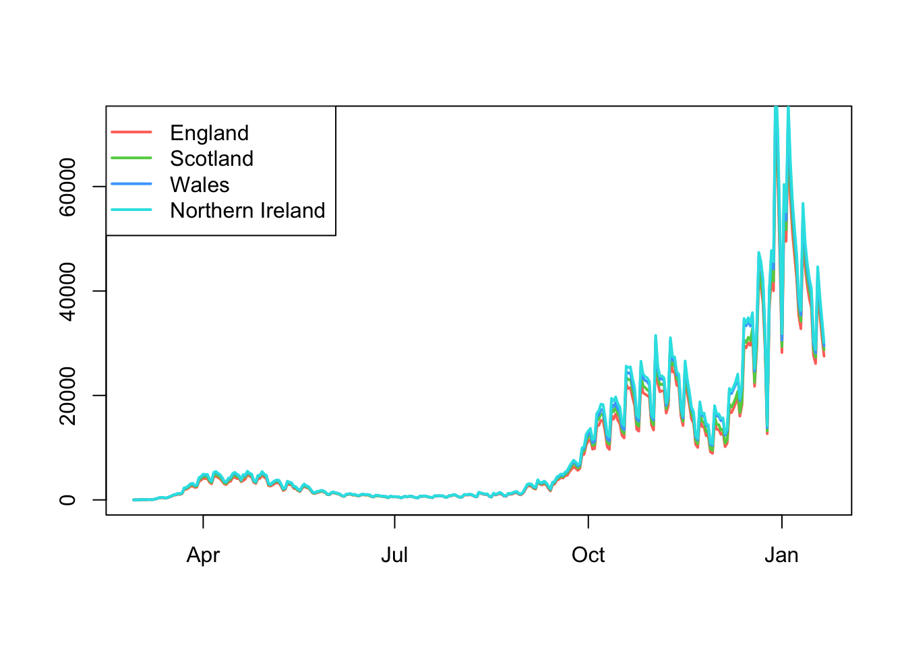
What would make more sense is to plotting England separately. Doing so allows us to see the patterns across the UK more clearly. Placing the time series above each other also allows us to easily compare similar times on the same plots.
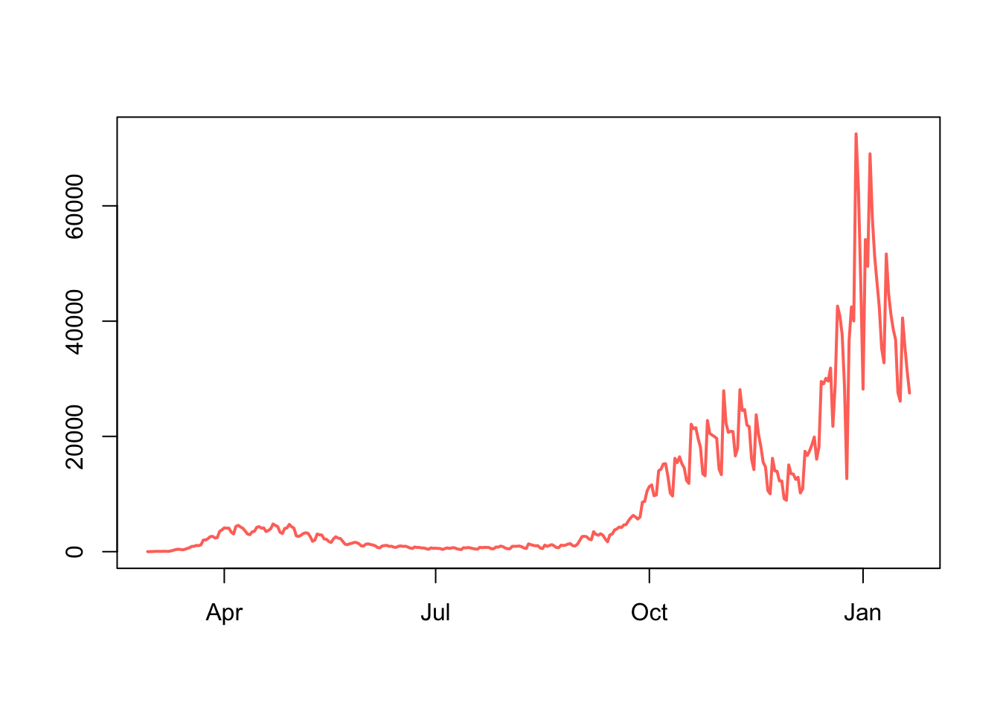
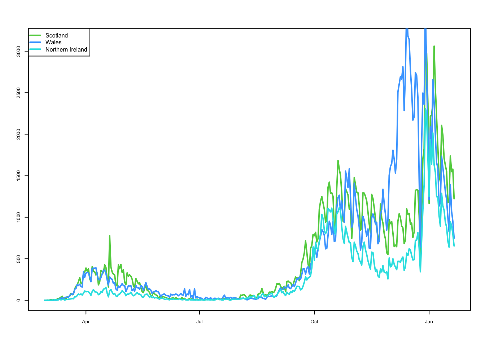
What is obvious now is that the patterns of cases is very similar across the UK, with each of the nations exhibiting peaks in cases around the same time. One feature that does slightly deviate from this trend is that it appears that in Wales the third peak arrived earlier than in other nations.
An improvement to this plot would be to standardise the case numbers by the population sizes of the nations. As England is much more populous than the other nations, it naturally will have more cases. If we compute the rates of coronavirus (per 100000 people) across the UK then we should have four time series that are directly comparable on the same plot:
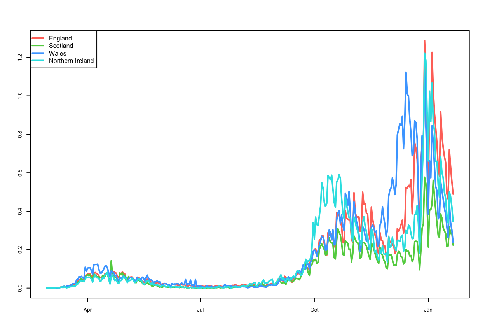
Using the rates have corrected for the major differences in scale, and now we can see that the case rates are very close all over the UK. One feature that was not visible on the previous plots is the spike in cases in Northern Ireland in October.
When we have correlated time series such as these, it can also make sense to draw the data as a scatterplot. For instance, we can plot the England data against that for Wales:
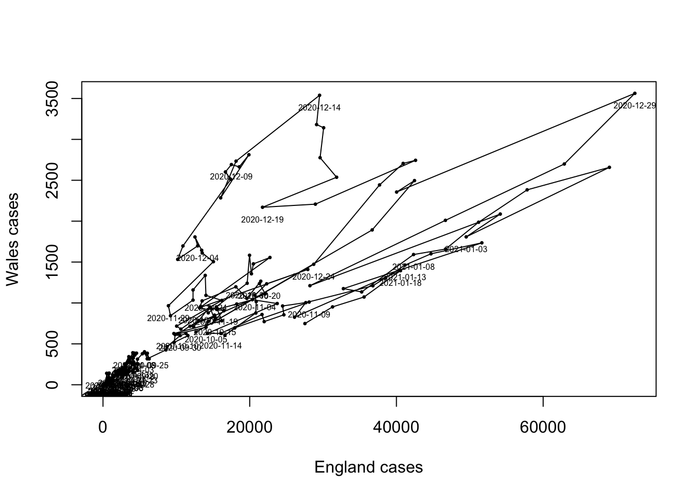
When we have correlated time series, such as these, an alternative visualisation is to plot one against the other like a scatterplot. Here we have plotted the cases in England versus those in Wales.
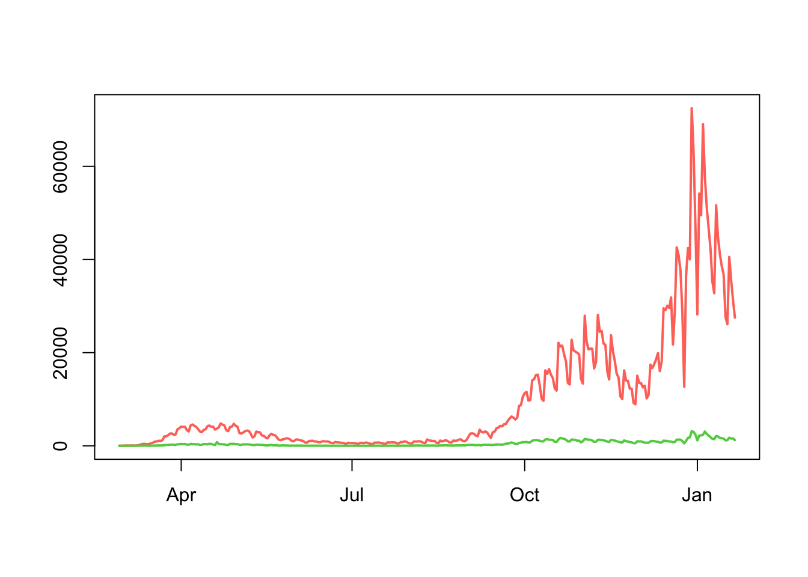

Here we can see the that most of the time cases were low and concentrated in the bottom left corner, and the peaks in cases are visible as the sizable deviations towards the top right corner. The early peak in Wales is visible when the plot moves vertically upwards. A more effective presentation of this information would use animation to show how the data points change over time, rather than showing everything at once.

Issues with Time Series
Length of time series - not all time series will have data for the same period. Are we interested in the long-term or short-term features?
Irregular vs regular series - time series data may not be recorded on a regular schedule, making detection or exploitation of periodic behaviour difficult. Similarly, where we have multiple time series they may not be all recorded at the same times, making direct comparisons difficult
Data definitions may change - for long-term time series, the definition of the variable may change during the series, e.g. definitions of unemployment, GDP, net migration etc can change which makes comparison difficult.
Time series of discrete variables - barcharts may be better for ordinal variables, but categorical variables may be best illustrated by the observed proportions of the different categories. Alternatively, Sankey plots can be used to display how proportions of a categorical variable change.
Outliers - as usual, be careful with outliers but be mindful that they may be part of the pattern over time, e.g. peaks of the coronavirus epidemic.
Length of time series - not all time series will have data for the same period, making comparisons difficult. We should also think about whether we are interested in the long-term behaviour (trend) or short-term features?
Irregular vs regular series - multiple time series may not be all recorded at the same time points, again making direct comparisons difficult
Data definitions may change - for long-term time series, the definition of the variable may change during the series. The UK changed its definition of unemployment over 20 times duringfrom 1979 to 1993!
Time series of discrete variables - barcharts may be better for ordinal variables, but categorical variables may be best illustrated by the observed proportions of the different categories.
Outliers - be careful with outliers, as they may be part of the pattern over time
Summary
- Smoothing is an effective technique for estimating a trend of a data set without requiring complex modelling.
- Kernel density estimation does a similar job for estimating the density function of a variable.
- Both techniques are sensitive to their kernel function, and bandwidth parameter.
- Time series are a special kind of data representing a variable changing over time, and smoothing can be useful to expose the trend.
- Simple line plots are effective for time series, but plotting multiple time series simultaneously needs to be done with care.
Comments on Loess
To apply local regression by LOESS, we can use the
loessfunction, which works much like thelmfunction does for standard regression. First we fit the model usingloess:We can then use the
predictfunctions to predict values of the smoothed trend:The predictions can then be used to draw the smoothed trend on the plot
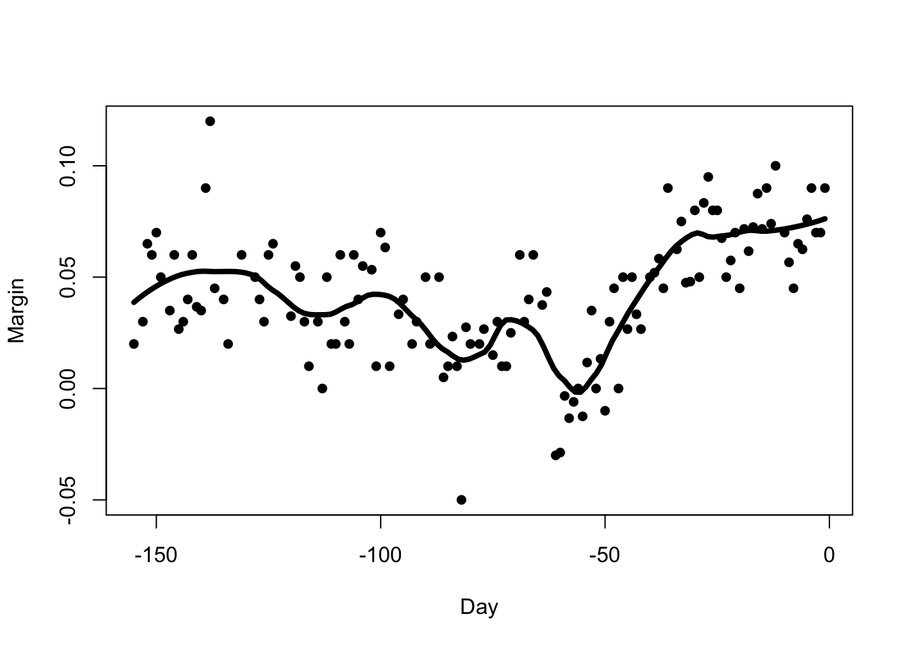
Adjusting the
spanargument has a similar effect to adjusting the bandwidth of the kernel smoother on the smoothness of the resulting trend:As LOESS just uses linear regressions to generate its smoothed trend, we can apply linear regression theory to obtain the standard errors of the trend and form confidence intervals around it.